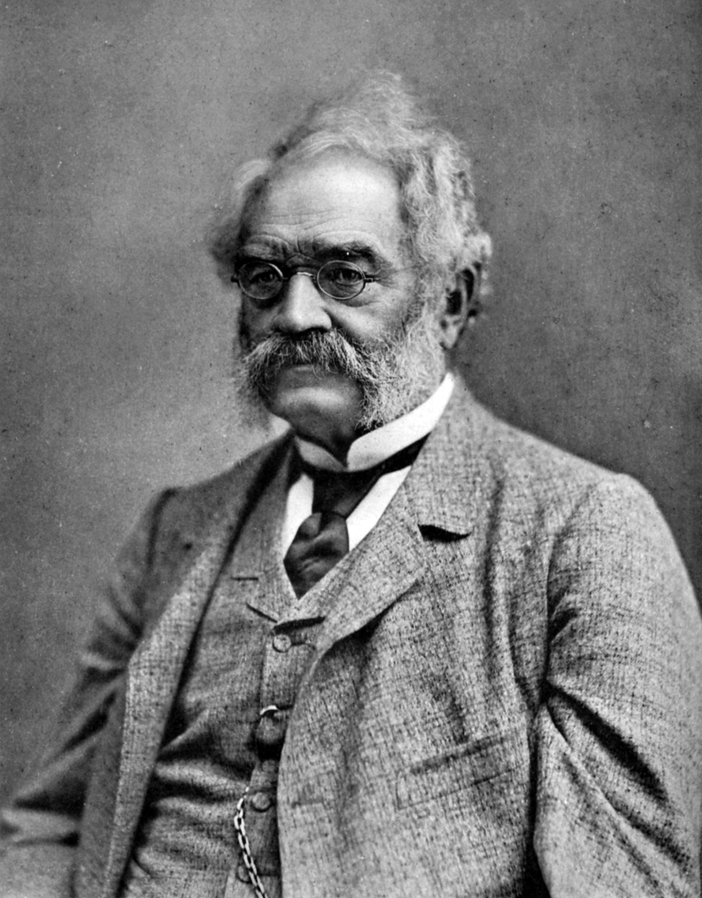
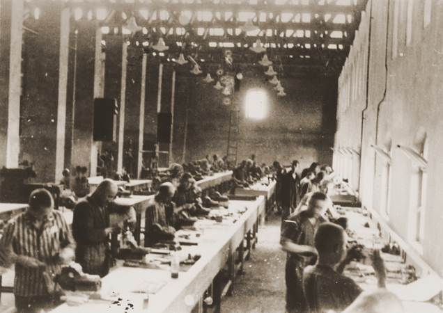

Breve historia de Siemens
Comenzemos...
Siemens AG es un conglomerado de empresas alemanas con sedes en Berlín y Múnich, considerada como la mayor empresa de fabricación industrial de Europa con 190 sucursales a lo largo del mundo. Siemens opera en 4 sectores principales: el sector industrial, energético, de salud (Siemens Healthineers) y de infraestructuras y ciudades. La empresa se caracteriza por el desarrollo de equipamiento de diagnóstico médico generando un 12% de beneficios después de su división de automatización industrial. Siemens emplea 379.000 personas alrededor del mundo reportando ingresos globales de 83 mil millones de € en el año 2018. El grupo está representado en 190 países y es una de las compañías más grandes del mundo en ingeniería eléctrica y electrónica.
Histia de sus comiensos
La empresa fue fundada el 1 de octubre de 1847 en un piso interior de la calle Schöneberg n.º 19, Berlín por Werner von Siemens y Johann Georg Halske, 2 bajo el nombre de Telegraphen-Bauanstalt von Siemens & Halske; a partir de 1897, Siemens & Halske AG. En 1848, la compañía construyó la primera línea telegráfica de larga distancia en Europa l; 500 km de Berlín a Fráncfort del Meno. Construyó también líneas telegráficas en Rusia, y en 1867, Siemens completó la monumental línea telegráfica Indo-Europea de (Calcuta a Londres) 3
A finales del siglo XIX comenzó a construirse en Berlín Siemensstadt, un barrio residencial e industrial que acoge a sus empleados. En 1903, se fundó Siemens-Schuckertwerke. En 1919 se fundó Osram GmbH; Siemens & Halske y otros tres grupos alemanes llevaron a cabo esta acción (entre ellos AEG). Las acciones de Osram son 100% de Siemens AG en la actualidad. En 1932 se fundó Siemens-Reiniger-Werke AG, que se dedicaba a la medicina. A partir de 1966 se conoce como Siemens AG, que fue la unión de Siemens & Halske, Siemens-Reiniger-Werke y Siemens-Schuckertwerke. Esta acción se llevó a cabo bajo el mandato de Ernst von Siemens, nieto de Werner. Empleaba al menos 359.000 personas en 2011.
 